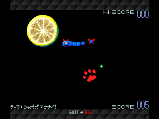
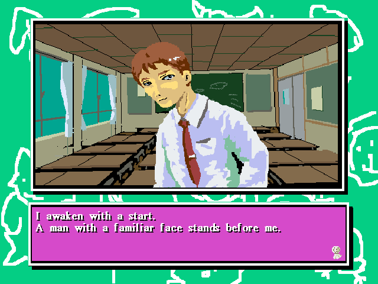
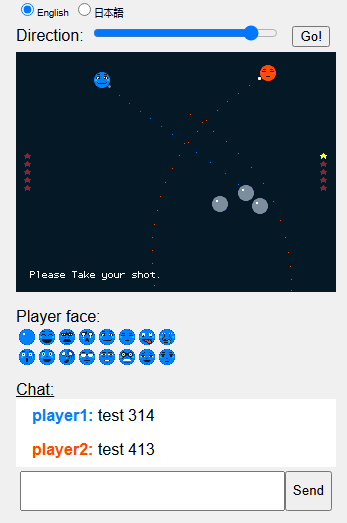
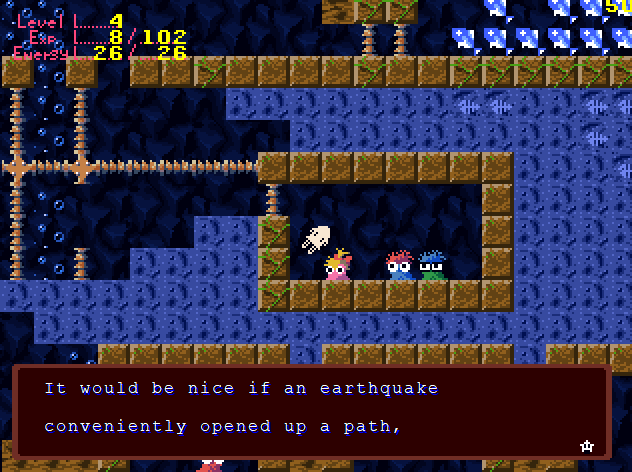
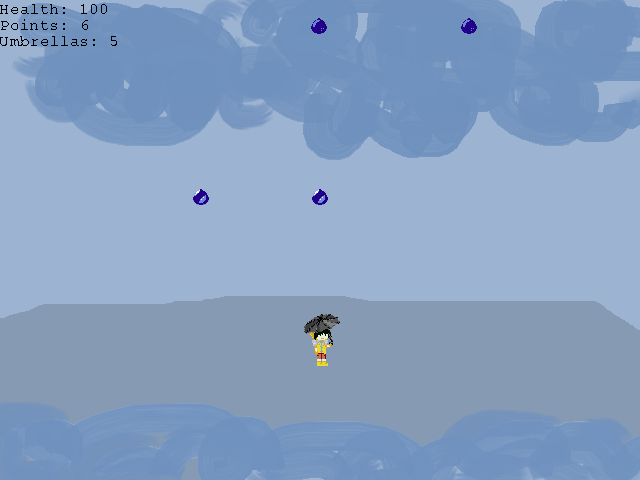

JiL JiL is a 1997 free arcade-style game by
Studio Pixel, best known for creating
Cave Story. As an exercise, I attempted to recreate this game from scratch in Javascript so it can be played online, with support for touchscreens. Keep in mind that the physics was eyeballed and is thus somewhat inaccurate to the original.
Play here! (The
source code is also available if you're interested.)

"Saying 'I Love You'" is a recently unearthed visual novel made in 1999 as a collaboration between BA2 (who also made
Shine Shine Galaxy) and Studio Pixel.
It is the only known game other than
Ikachan and
Azarashi to use Pixel's
PiyoPiyo music engine. The soundtrack can be found in PiyoPiyo's sample tracks, and in fact was the first clue to the game's existence via
this post on Pixel's old site.
It's quite short, at about half an hour of 'gameplay'. There are three character routes, each with a good and bad ending. It's also really funny!
Download here!
You may want to use a tool like
DxWND to run it in windowed mode, but this may cause other problems.
I had the honour of helping find and translate the game, and doing the translation was a lot gnarlier than I expected. Apart from the actual translation of the dialogue, it seems the game script only rendered Japanese text, and interpreted ASCII characters as commands. I had to learn Assembly language (using
this lovely guide) to hack the game to get around this and adjust the script parsing code. My notes on the game's code and my modifications are included in the download. The whole business was ultimately fun but pretty hard since I'm not really a programmer. I have a newfound respect for people who do this sort of thing on a regular basis!
I have now also ported the game to the Ren'Py engine, which should be easier to play (at the cost of some cosmetic inaccuracies).
Windows/Linux,
Mac, and
Browser (try it out!).

Akantares is a game by Studio Pixel where you take aim and try to shoot down your opponent. The notable feature about the gameplay is that objects on screen will affect your shot gravitationally. Pixel originally had a server where people could play each other online, but unfortunately it did not last long.
I have attempted to recreate the game from scratch in Javascript, server and all.
You can play it here! The source code can be found
on my GitHub, in case you would like to host your own server or make improvements/additions to the game.
A slightly older version of the game without the online server mode is available
here, just in case.

Ikachan is a 'bite-sized adventure' game by Studio Pixel where you control a squid navigating an underwater society ravaged by earthquakes and famines. It was developed in 1999, and received its last update in 2006.
An English translation was produced not long after, but it was based on Google Translate and manually touched up, leading to some inaccuracies in the script. I learnt that this was the case 19 years later, on the
Development Room Pixel Discord server, and soon produced a more faithful translation. (I don't know Japanese myself actually, this was done using a lot of dictionaries and language learning forums, but I'm fairly confident in the result.)
Download here! Features extensive translation notes.

This is a silly little bullet-hell game I made featuring
Makito, an OC of
Nightmargin (best known for their work on OneShot).
It was just a tiny little project to practice programming (with pygame), while also producing some fan content, because I really want there to be more content about this little guy [and sadly he seems to have been abandoned by the artist :( ]
Download here! (There isn't much in there, though, so be warned.)